Tomar doit sa célébrité au "Convento de Cristo", un couvent juché sur une colline, qui mêle les styles roman, gothique, Renaissance, sans oublier le manuélin, représenté ici, entre autre, par la célèbre
fenêtre manuéline
qui figure toujours en bonne place sur les dépliants touristiques.
Son labyrinthe de cloîtres, de galeries, d'escaliers, de couloirs, de terrasses et de salles est empreint d'une atmosphère mystérieuse qui ferait de ce lieu un cadre idéal pour un roman à la manière du
Nom de la Rose
. Bien entendu, il est inscrit par l'Unesco à l'inventaire du patrimoine mondial.
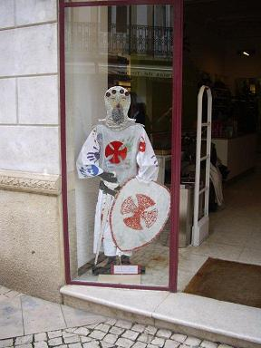
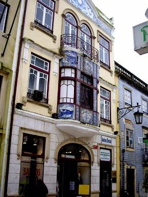
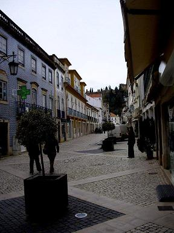
Tomar, ville pimpante et propre, prépare la fête des Templiers.
La vieille ville de Tomar regorge de jolies maisons bordant des rues pavées.
Un lacis de ruelles anciennes abrite la plus vieille
synagogue
du Portugal, construite en 1430. Elle fut désaffectée en 1496, quand les Juifs furent contraints de se convertir ou de s'exiler, elle fit office de prison, avant de devenir une église puis de servir d'entrepôt à un épicier...
Elle accueille aujourd'hui le
Musée luso-hébraïque Abraão Zacuto
où sont exposées des pierres tombales et des objets cultuels juifs (donateurs américains pour la plupart). En particulier une
main de Torah
servant à guider la lecture, alors que notre guide de Porto avait assuré qu'en aucun cas la main de Fatma des musulmans ne pouvait avoir une origine juive...
La gardienne nous fait remarquer les cruches d'argile, en haut des murs, dont la résonance permettait d'amplifier l'acoustique.
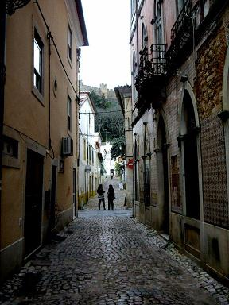

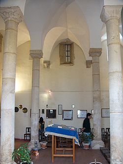
La rue du Dr Jacinto où se trouve la synagogue-musée.
La place de la République abrite (mais pas de la pluie qui commence à tomber) l'église Saint-Jean Baptiste , construite à la fin du XVème siècle. Le campanile manuélin, mérite, paraît-il une ascension pour le coup d'œil sur la ville. De l'autre côté de la place l'hôtel de ville (XVIIIème siècle) est dominé par les murailles du couvent du XIIème siècle.
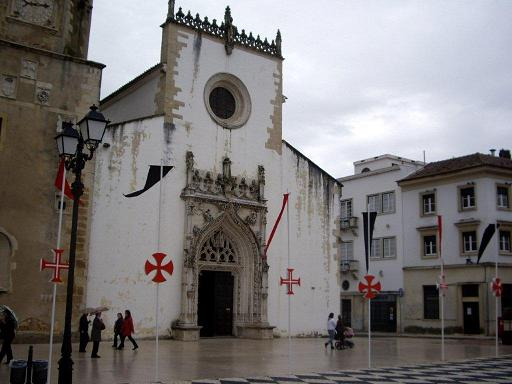
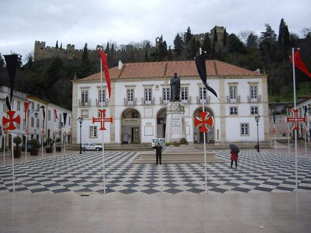
La Place de la République avec l'église St-Jean Baptiste et l'Hôtel de ville
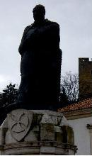
Au centre de la place s'élève la statue de
Gualdim Pais
qui porte les dates mystérieuses: 1160 - 1162 - 1938.
Il s'agit du fondateur, plus ou moins mythique de Tomar, le Grand maître des Templiers du Portugal, Gaudin Païs, réputé avoir posé la première pierre du monastère-forteresse en 1160, après que le pays, reconquis sur les Maures fut donné en fief à l'Ordre en 1159. Le "foral" fut transmis en 1162 par le Grand maître aux habitants qui étaient de ce fait astreints à l'ost en échange de certains privilèges.
La statue fut élevée, sous Salazar, en 1938.
Le monastère-forteresse de l'ordre du Christ
À l'instar de ce qui se passait au même moment en France, le roi portugais Dinis, craignant la puissance sans cesse croissante des Templiers, les exila en 1314 et les remplaça par l' Ordre du Christ qui prit possession des lieux en 1356. Cette congrégation connut son apogée au siècle suivant, quand Henri le Navigateur devint son Grand maître et qu'elle finança des expéditions en Afrique et aux Indes. Les richesses ainsi générées permirent la réalisation des extraordinaires ornements de Tomar (entre autres). L'ordre déclina ensuite et disparut avec toutes les congrégations en 1834. Le couvent devint alors la résidence du comte de Tomar.
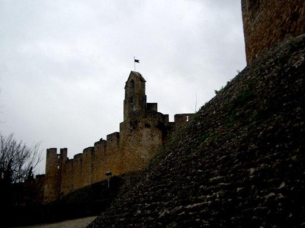
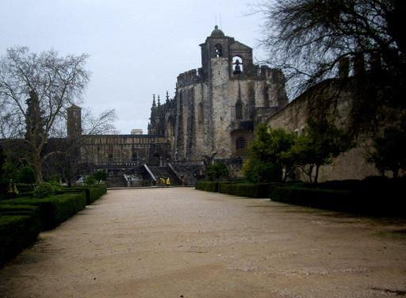
Le "Convento de Cristo": les murailles et l'esplanade...sous la pluie
La rotonde au pied de laquelle se cache l'entrée principale est l'arrière de l'église fortifiée originale.
On accède d'abord à l'ancienne sacristie qui ouvre sur deux cloîtres gothiques: le
cloître du Cimetière
, orné d'azulejos du XVIIème siècle et le
cloître des Ablutions
.
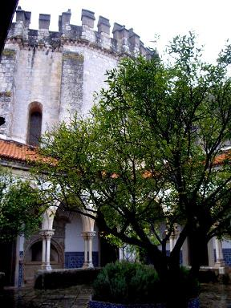
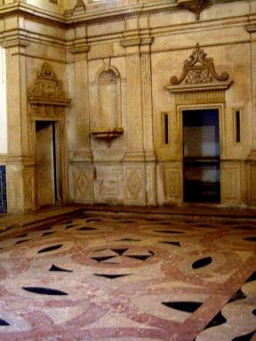
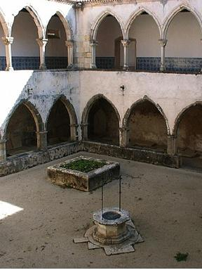
Le Cloître du Cimetière, l'ancienne sacristie, le cloître des Ablutions.
On arrive ensuite à l'église du XVème siècle qui inclut la structure originelle du XIIème siècle, la Charola des Templiers , une rotonde romane dont la disposition évoque celle du Saint-Sépulcre de Jérusalem. Le déambulatoire à 16 côtés entoure un oratoire octogonal richement décoré d'une multitude de peintures, de fresques et de statues de l'artiste manuélin Diogo de Arruda et de son continuateur, l'Espagnol Jean de Castille.
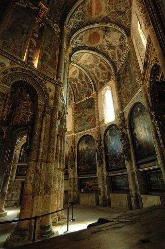
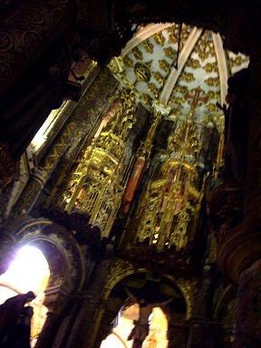
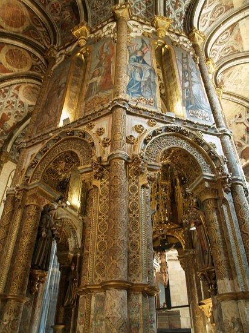
La merveille du monastère: la Charola.
On doit aux mêmes artistes le chœur surélevé de l'église.
La visite se poursuit en direction des couvents. On passe par un fleuron de l'architecture Renaissance et de la décoration manuéline, le
Cloître principal
datant de 1529. Il fut commencé par Jean de Castille, continué par Diogo de Torralva et achevé par Philippe Terzi, un Italien, vers 1580.
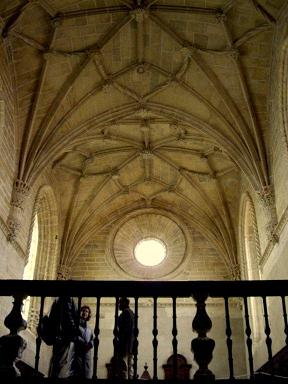
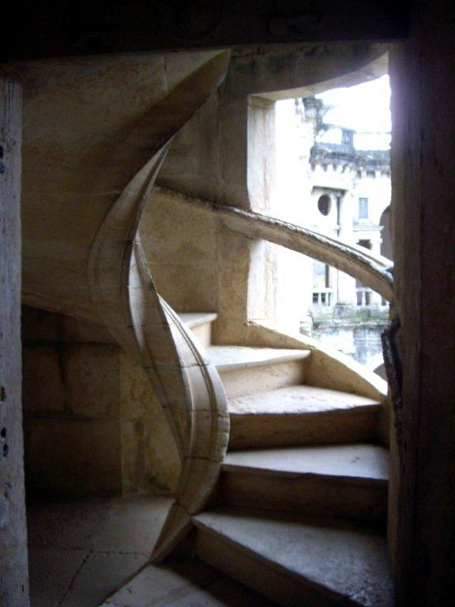
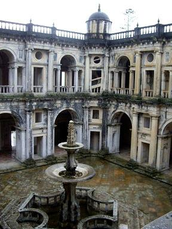
Le chœur de l'église. Escalier du cloître. Le Cloître principal.
En sortant sur la terrasse qui surplombe le cloître Sainte Barbe, on aperçoit la célèbre fenêtre manuéline de Tomar, sculptée dans du calcaire gris par Diogo de Arruda. Elle mêle motifs marins et emblèmes royaux surmonté de la croix de l'ordre du Christ.
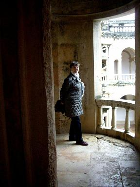
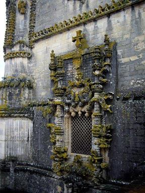
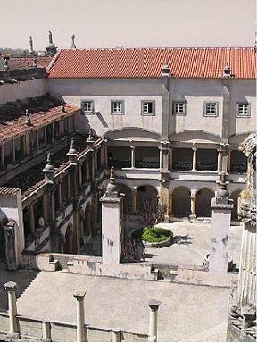
Escalier du cloître. La fenêtre manuéline. Le Cloître Sainte Barbe.
La terrasse à l'extrémité du cloître principal surplombe le jardin des moines. De là on peut admirer les somptueux motifs du Portail sud fraîchement restauré, contrairement à d'autres éléments de décoration (face ouest de l'église).
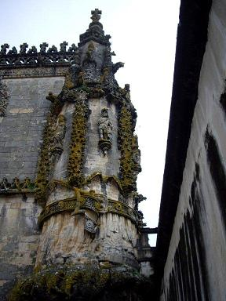
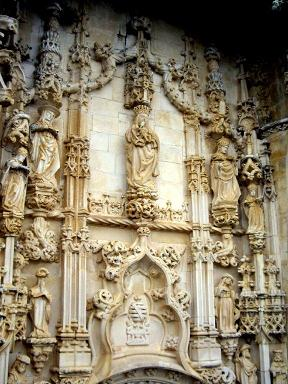
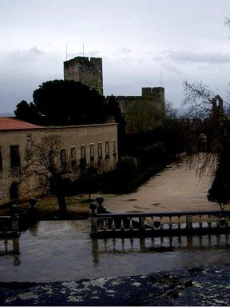
Sculpture manuéline. Portail sud. Jardin des moines.
Un imposant couloir mène ensuite aux
cellules des moines
et un escalier permet d'atteindre les cuisines et le réfectoire au rez-de-chaussée.
Cette longue visite termine la seconde journée de notre séjour.
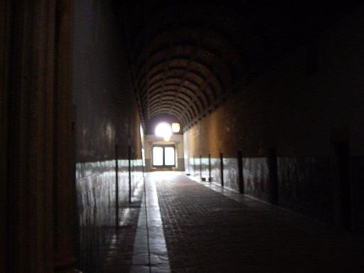
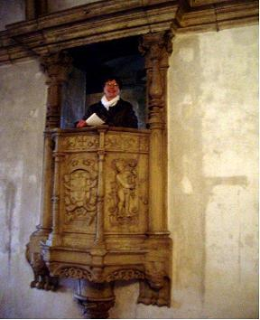
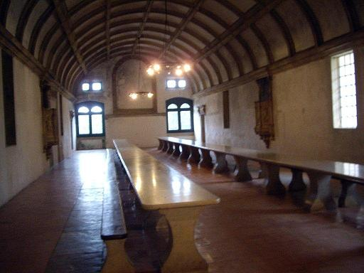
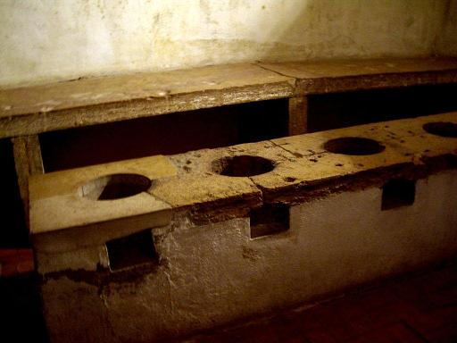
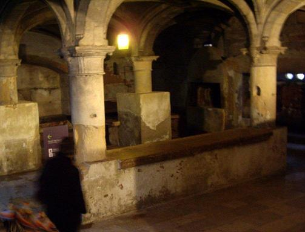
Le couloir menant aux cellules des moines. La chaire du réfectoire. Le réfectoire. La cuisine